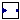

IndustrialControlSystems.LinearSystems.Interfaces.BaseBlock
IndustrialControlSystems.LinearSystems.Interfaces.BaseBlock
| Name | Description |
|---|---|
|  BaseBlock | Partial continuous time block interfaces |
| DiscreteBaseBlock | Partial discrete time block interfaces |
IndustrialControlSystems.LinearSystems.Interfaces.BaseBlock
Partial interface for a continuos time block.
Each block has a single input anda single output (SISO).
| Name | Description |
|---|---|
| u | input |
| y | output |
Partial interface for a discretised continuous time block.
Each block has a single input anda single output (SISO).
z - 1
s = ------------------------------
z*alpha*Ts - (alpha - 1)*Ts
that is equivalent toalpha = 0
alpha = 1
alpha = 0.5
Extends from BaseBlock (Partial continuous time block interfaces).
| Name | Description |
|---|---|
| Discretisation | |
| Ts | Sampling time [s] |
| method | Discretisation method |
| Name | Description |
|---|---|
| u | input |
| y | output |